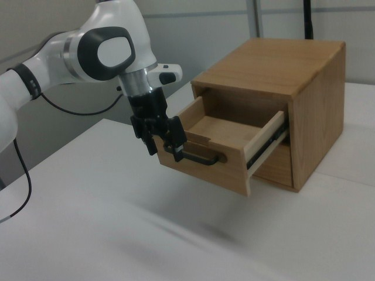

RoboMIND · franka_3rgb__slide_close_cabinet/0923_111806
Slide close cabinet

Annotation
From the dedicated visual review of this video (concise_action_v1). Plain text · JSON
Observed outcome
- Status
visually_completed
- Description
The top drawer starts partly open (frame 0). After the arm repositions (about frames 24-90), the closed gripper presses on the drawer handle from the image-left side and the drawer slides back into the cabinet (about frames 112-166). It is flush/closed by about frame 168, and the arm then withdraws down and back to image left (about 170-199) with the drawer remaining closed.
Hand roles
- Active visible arm
Single arm moves its gripper beside the open drawer handle, closes the gripper, pushes the drawer shut by the handle, then withdraws.
- Other arm
None.
Coordination
Single arm acts alone; no second arm, hand transfer or human interaction.
Robot-side evidence
- Visible description
Single Franka Emika Panda arm with a parallel-jaw gripper, base off-frame to image left; it enters from the left edge in camera_right view and reaches toward the cabinet drawer on the right. Only one arm exists.
- Source annotation
original/task_prompt.txt: 'slide close wooden cabinet'.
- Visual certainty
Not a humanoid; left/right anatomy is not needed. The prompt refers to the single visible robotic arm.
Chronology
| Frames | Observation |
|---|---|
| 0–22 | Arm hovers above and left of the partly open top drawer with the gripper open and pointing down near the handle. Drawer is open (front pulled out toward the camera and image left). |
| 24–70 | Gripper lifts slightly, points down at the image left of the handle and rotates/adjusts; wrist rotation and a small gripper-value change appear in telemetry (about frames 40-60). Drawer unchanged and still open. |
| 72–100 | Arm moves back toward the handle; gripper value rises from about 0.2 to 0.99 (about frames 80-100), consistent with the fingers closing; gripper sits at the left end of the handle. |
| 102–120 | Closed gripper rests against the handle area; arm extends toward the cabinet (joint motion increases). Drawer still open at about frame 110; starts moving in at about 112-120. |
| 122–166 | Arm extends, pushing the closed gripper against the drawer handle; the drawer slides back into the cabinet progressively (about frame 134 half closed, 160 with only a small gap). |
| 168–170 | Drawer visibly closed and flush with the cabinet front; closed gripper still at the handle. |
| 172–199 | Arm withdraws down and to image left away from the handle; drawer remains closed (frame 186 and later clear of the handle). |
Clip selection
The episode is one continuous single task (push the already-open top drawer of the wooden cabinet closed); the approach, push and withdrawal are ordinary phases of that task, so the complete 200-frame sequence is retained and no shortened clip or separate full-sequence prompt is needed.
Differences from the publisher annotation
- No discrepancy: original/task_prompt.txt 'slide close wooden cabinet' matches the observed pushing of the top drawer closed (the object is a wooden two-drawer cabinet whose top drawer is closed; the bottom drawer is already closed and unchanged).
Uncertainties
- Whether the closed gripper pushes the handle bar from behind or presses on it with the outer fingers is not resolvable at 640x480; the prompt says 'pushes ... shut by its handle' and 'closes its gripper' (gripper telemetry 0.99 from about frame 100, polarity inferred from video as higher = more closed).
- The exact frame at which the closed gripper first contacts the handle (between about frames 100 and 112) is judged from the contact sheets.
- FPS is not recorded in the source; frame indices are authoritative, not time.
- The withdrawal after frame 170 is only partial in the frame (arm remains near the cabinet at frame 199).
Complete review record action_review.json
{
"prompt_protocol": "concise_action_v1",
"prompt_provenance": "visually_authored_from_video_and_initial_frame",
"dataset": "x-humanoid-robomind/RoboMIND",
"task": "slide_close_cabinet",
"episode_id": "0923_111806",
"source_video": "../../original/data/trajectory.hdf5",
"generation_camera": "camera_right",
"source_frame_count": 200,
"source_resolution": [
640,
480
],
"source_fps": null,
"source_fps_note": "FPS is not recorded in the source HDF5; 30 FPS is only a nominal playback rate, so no real-time durations are claimed.",
"selected_source_frame_start": 0,
"selected_source_frame_end_exclusive": 200,
"selected_frame_count": 200,
"selection_reason": "The episode is one continuous single task (push the already-open top drawer of the wooden cabinet closed); the approach, push and withdrawal are ordinary phases of that task, so the complete 200-frame sequence is retained and no shortened clip or separate full-sequence prompt is needed.",
"usable_prompt": "The robotic arm closes its gripper and pushes the open top drawer of the wooden cabinet shut by its handle, then withdraws from the closed drawer. Keep the camera fixed; preserve robot geometry, physically valid joint motion, and normal gripper opening and closing.",
"full_sequence_prompt": "The robotic arm closes its gripper and pushes the open top drawer of the wooden cabinet shut by its handle, then withdraws from the closed drawer. Keep the camera fixed; preserve robot geometry, physically valid joint motion, and normal gripper opening and closing.",
"selected_action_outcome": {
"status": "visually_completed",
"description": "The top drawer starts partly open (frame 0). After the arm repositions (about frames 24-90), the closed gripper presses on the drawer handle from the image-left side and the drawer slides back into the cabinet (about frames 112-166). It is flush/closed by about frame 168, and the arm then withdraws down and back to image left (about 170-199) with the drawer remaining closed."
},
"source_overall_outcome": {
"status": "visually_completed",
"source_quality_label": null,
"description": "Same as the selected action: the drawer ends closed. No separate success/failure label is provided in the source."
},
"anatomical_side_evidence": {
"visible_description": "Single Franka Emika Panda arm with a parallel-jaw gripper, base off-frame to image left; it enters from the left edge in camera_right view and reaches toward the cabinet drawer on the right. Only one arm exists.",
"source_annotation": "original/task_prompt.txt: 'slide close wooden cabinet'.",
"visual_certainty": "Not a humanoid; left/right anatomy is not needed. The prompt refers to the single visible robotic arm."
},
"arm_roles": {
"active_visible_arm": "Single arm moves its gripper beside the open drawer handle, closes the gripper, pushes the drawer shut by the handle, then withdraws.",
"other_arm": "None."
},
"coordination": "Single arm acts alone; no second arm, hand transfer or human interaction.",
"chronology": [
{
"source_frames_inclusive": [
0,
22
],
"observation": "Arm hovers above and left of the partly open top drawer with the gripper open and pointing down near the handle. Drawer is open (front pulled out toward the camera and image left)."
},
{
"source_frames_inclusive": [
24,
70
],
"observation": "Gripper lifts slightly, points down at the image left of the handle and rotates/adjusts; wrist rotation and a small gripper-value change appear in telemetry (about frames 40-60). Drawer unchanged and still open."
},
{
"source_frames_inclusive": [
72,
100
],
"observation": "Arm moves back toward the handle; gripper value rises from about 0.2 to 0.99 (about frames 80-100), consistent with the fingers closing; gripper sits at the left end of the handle."
},
{
"source_frames_inclusive": [
102,
120
],
"observation": "Closed gripper rests against the handle area; arm extends toward the cabinet (joint motion increases). Drawer still open at about frame 110; starts moving in at about 112-120."
},
{
"source_frames_inclusive": [
122,
166
],
"observation": "Arm extends, pushing the closed gripper against the drawer handle; the drawer slides back into the cabinet progressively (about frame 134 half closed, 160 with only a small gap)."
},
{
"source_frames_inclusive": [
168,
170
],
"observation": "Drawer visibly closed and flush with the cabinet front; closed gripper still at the handle."
},
{
"source_frames_inclusive": [
172,
199
],
"observation": "Arm withdraws down and to image left away from the handle; drawer remains closed (frame 186 and later clear of the handle)."
}
],
"uncertainties": [
"Whether the closed gripper pushes the handle bar from behind or presses on it with the outer fingers is not resolvable at 640x480; the prompt says 'pushes ... shut by its handle' and 'closes its gripper' (gripper telemetry 0.99 from about frame 100, polarity inferred from video as higher = more closed).",
"The exact frame at which the closed gripper first contacts the handle (between about frames 100 and 112) is judged from the contact sheets.",
"FPS is not recorded in the source; frame indices are authoritative, not time.",
"The withdrawal after frame 170 is only partial in the frame (arm remains near the cabinet at frame 199)."
],
"source_annotation_discrepancies": [
"No discrepancy: original/task_prompt.txt 'slide close wooden cabinet' matches the observed pushing of the top drawer closed (the object is a wooden two-drawer cabinet whose top drawer is closed; the bottom drawer is already closed and unchanged)."
],
"inspection_coverage": {
"entire_sequence_reviewed": true,
"sampled_decoded_frame_indices": [
0,
2,
4,
6,
8,
10,
12,
14,
16,
18,
20,
22,
24,
26,
28,
30,
32,
34,
36,
38,
40,
42,
44,
46,
48,
50,
52,
54,
56,
58,
60,
62,
64,
66,
68,
70,
72,
74,
76,
78,
80,
82,
84,
86,
88,
90,
92,
94,
96,
98,
100,
102,
104,
106,
108,
110,
112,
114,
116,
118,
120,
122,
124,
126,
128,
130,
132,
134,
136,
138,
140,
142,
144,
146,
148,
150,
152,
154,
156,
158,
160,
162,
164,
166,
168,
170,
172,
174,
176,
178,
180,
182,
184,
186,
188,
190,
192,
194,
196,
198
],
"sampling_method": "Every second decoded frame of camera_right (frames 0-198) in 4x3 temporary contact sheets covering the complete 200-frame source, plus native-resolution frames at the transitions.",
"native_resolution_frame_indices": [
0,
60,
96,
110,
134,
160,
170,
186
],
"conditioning_png_inspected_after_sequence": true,
"conditioning_png": "../first_frame.png",
"temporary_evidence_location": "/tmp/rm_review_franka_3rgb__slide_close_cabinet_0923_111806 (not a dataset artifact)",
"ancillary_camera_videos_used": false,
"telemetry_used": "puppet/joint_position (8-dim; last column is the gripper) sampled every 10 frames as supporting evidence only."
},
"generation_reference_validation": {
"source_frame_start": 0,
"source_frame_end_exclusive": 200,
"frame_count": 200,
"lossless_source_frame_correspondence_passed": true,
"original_source_hdf5_retained_unchanged": true
}
}